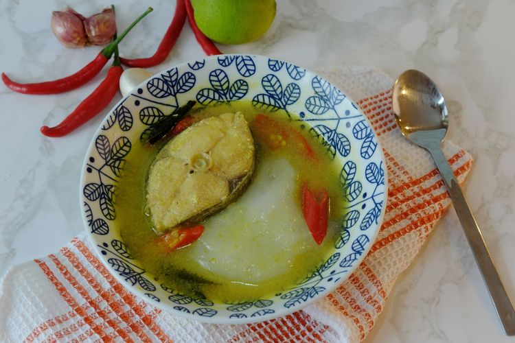
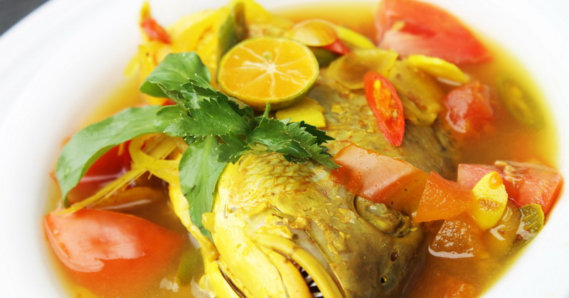
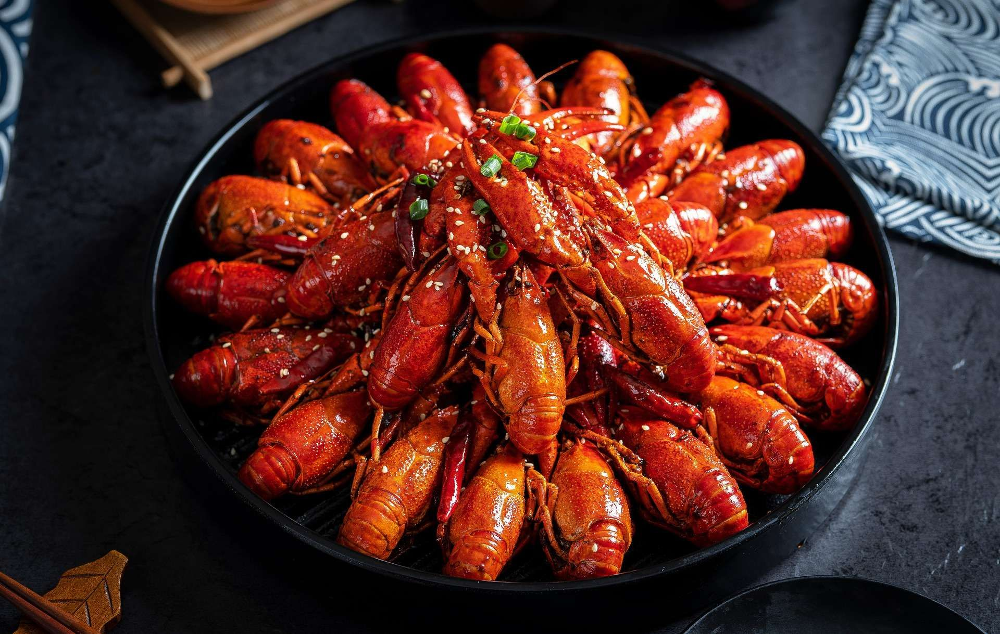
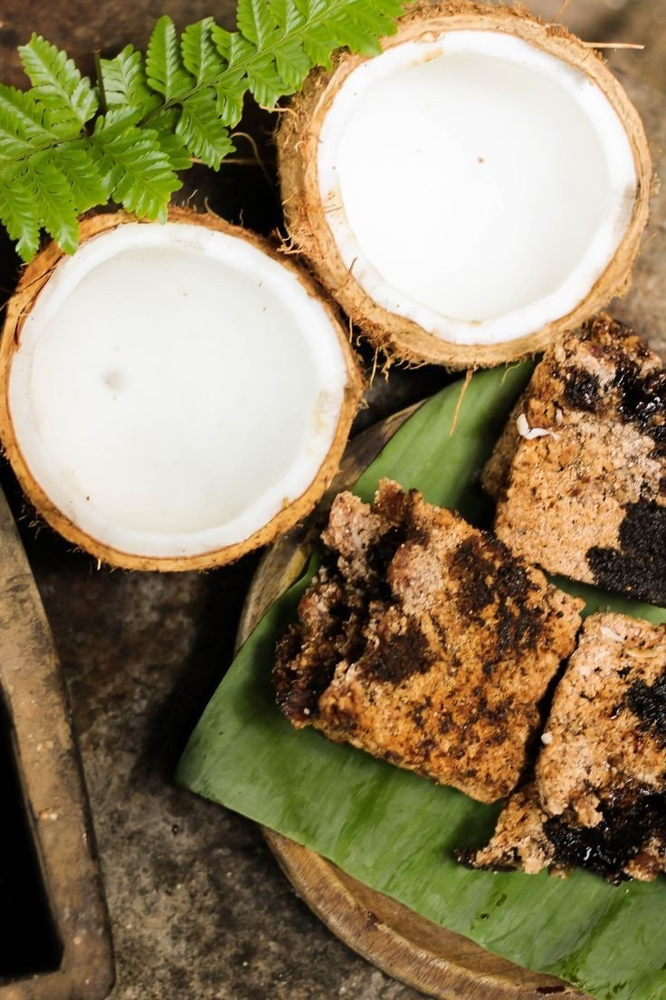
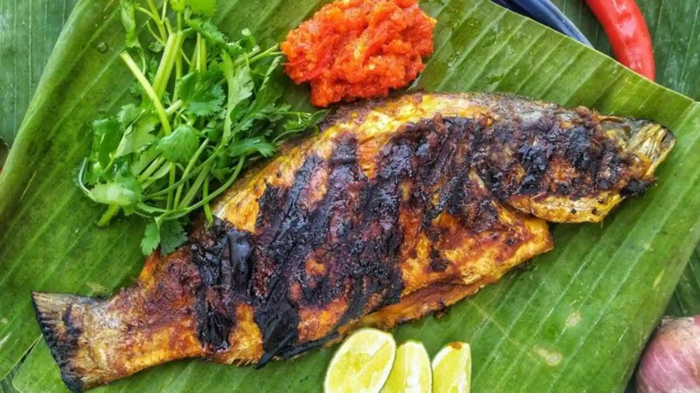
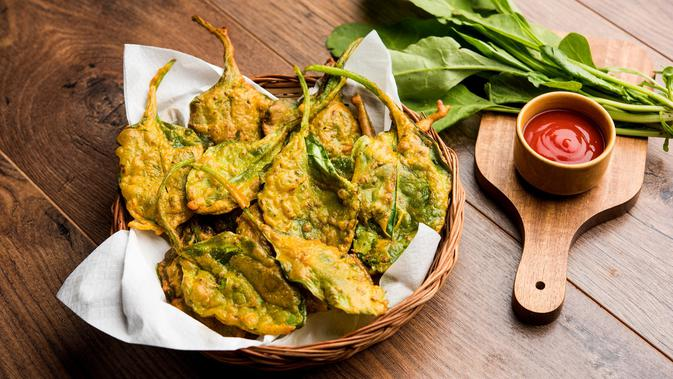

Papeda
Bubur sagu khas Papua yang lengket dan kenyal, biasanya disantap dengan ikan kuah kuning.
Bahan-bahan:
- 100 gr tepung sagu
- 500 ml air
- Ikan kuah kuning sebagai pelengkap
Cara membuat:
- Campur tepung sagu dengan air, aduk hingga rata.
- Masak dengan api kecil sambil terus diaduk hingga mengental dan lengket.
- Bentuk bulatan dan sajikan hangat bersama ikan kuah kuning.

Ikan Kuah Kuning Papua
Ikan laut segar dimasak dengan bumbu kunyit dan rempah khas Papua yang segar dan pedas.
Bahan-bahan:
- 500 gr ikan laut segar (misal kakap atau tenggiri)
- 3 cm kunyit, haluskan
- 2 batang serai, memarkan
- 3 siung bawang merah, iris tipis
- 3 siung bawang putih, iris tipis
- 2 buah tomat, potong-potong
- Garam dan gula secukupnya
- Air secukupnya
Cara membuat:
- Tumis bawang merah, bawang putih, serai, dan kunyit hingga harum.
- Masukkan air dan didihkan.
- Masukkan ikan dan tomat, beri garam dan gula.
- Masak hingga ikan matang dan bumbu meresap.
- Sajikan bersama papeda hangat.

Udang Selingkuh
Udang segar dimasak dengan bumbu santan pedas, cita rasa unik dari Papua.
Bahan-bahan:
- 300 gr udang segar, bersihkan
- 200 ml santan
- 5 siung bawang merah, iris
- 3 siung bawang putih, iris
- 5 buah cabai rawit, iris
- 2 lembar daun jeruk
- Garam dan gula secukupnya
- Minyak untuk menumis
Cara membuat:
- Tumis bawang merah, bawang putih, cabai, dan daun jeruk hingga harum.
- Masukkan udang, aduk hingga berubah warna.
- Tuang santan, masak dengan api kecil sampai kuah mengental.
- Beri garam dan gula sesuai selera.
- Sajikan hangat dengan nasi putih.

Sagu Bakar
Makanan khas Papua dari sagu yang dibakar dalam daun pisang, biasanya disajikan dengan ikan atau sambal.
Bahan-bahan:
- 200 gr tepung sagu
- 100 ml air panas
- Sejumput garam
- Daun pisang secukupnya untuk membungkus
Cara membuat:
- Campur tepung sagu, garam, dan air panas sedikit demi sedikit hingga bisa dipadatkan.
- Bentuk adonan memanjang lalu bungkus dalam daun pisang.
- Bakar di atas bara api atau teflon hingga daun gosong dan aroma wangi keluar.
- Sajikan dengan ikan bakar atau sambal khas Papua.

Ikan Bakar Manokwari
Ikan bakar dengan bumbu khas Manokwari, gurih dan pedas, favorit masyarakat Papua.
Bahan-bahan:
- 1 ekor ikan kakap atau ikan laut lainnya
- 5 siung bawang merah
- 3 siung bawang putih
- 5 buah cabai merah keriting
- 2 buah tomat
- 1 sdm air jeruk nipis
- Garam dan gula secukupnya
- Minyak untuk menumis
Cara membuat:
- Haluskan bawang merah, bawang putih, cabai, dan tomat.
- Marinasi ikan dengan bumbu halus dan air jeruk nipis selama 30 menit.
- Bakar ikan hingga matang sambil sesekali dioles bumbu.
- Sajikan hangat dengan nasi dan sambal.

Keripik Bayam Papua
Camilan renyah dari daun bayam yang dibumbui, favorit orang Papua.
Bahan-bahan:
- 200 gr daun bayam segar, cuci bersih
- 100 gr tepung beras
- 2 siung bawang putih, haluskan
- Garam secukupnya
- Minyak untuk menggoreng
Cara membuat:
- Campur tepung beras dengan bawang putih dan garam, aduk rata.
- Celupkan daun bayam ke adonan tepung, goreng hingga renyah dan kecoklatan.
- Angkat dan tiriskan.
- Sajikan sebagai camilan sehat dan gurih.